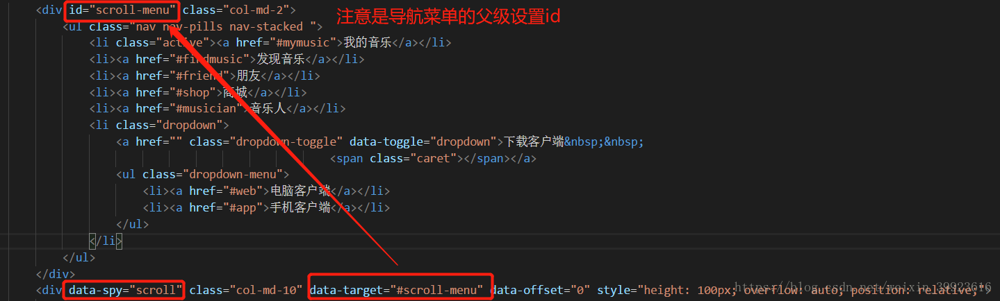

scrollspy（滚动监听）的使用方法
实现功能
1、当滚动区域内设置的hashkey距离顶点到有效位置时，就关联设置其导航上的指定项
2、使用滚动监听的话，导航栏必须采用 class=”nav”的nav组件才可以。导航必须是 .nav > li > a 结构，并且a上href或data-target要绑定hashkey
3、在定义.nav组件的时候，我们需要把.nav放在另一个容器内(比如div),且该容器需要有一个id属性（与这里data-target需要设置的值相同）。
4、你需要给滚动内容的标签添加 data-spy=”scroll”属性和data-target属性，data-target与导航父级Id（一定是父级）一致
data-spy 属性指明了被监听的元素，data-target属性指明滚动时需要控制的nav高亮显示
6、如果监听Body的滚动，那么你必须给body添加position:relative样式
如果监听的不是Body，而是其他得元素[貌似这种方式常见]，那么你需要添加三个样式：position:relative;height:500px;overflow-y:scroll;
例子如下：

源码分析：
1、原理：当滚动容器内的hashkey位置距离容器顶部只有 offset设置的值，就会设置导航中对应的href高亮
2、如果滚动区域是body，会将滚动区域元素标记为window（构造函数中判断）
this.$scrollElement = $(element).is(document.body) ? $(window) : $(element)
3、getScrolHeight：获取滚动容器的内容高度（包含被隐藏部分）
this.$scrollElement[0].scrollHeight || Math.max(this.$body[0].scrollHeight, document.documentElement.scrollHeight)
4、refresh：刷新并存储滚动容器内各hashkey的值
4.1、默认用offset来获取定位值，如果滚动区域不是window则用position来获取
1 |
|
4.2、根据导航上的hashkey来遍历获取 滚动区域内的hashkey对应的offset值：
5、process：滚动条事件触发函数，用于计算当前需要高亮那个导航菜单
1 | this.$body |
5.1、获取滚动容器已滚动距离：
1 | var scrollTop = this.$scrollElement.scrollTop() + this.options.offset |
5.2、滚动容器可以滚动的最大高度
1 | for (i = offsets.length; i--;) {//遍历所有的offset |
6、active：设置指定的导航菜单高亮
7、clear：清除所有高亮菜单